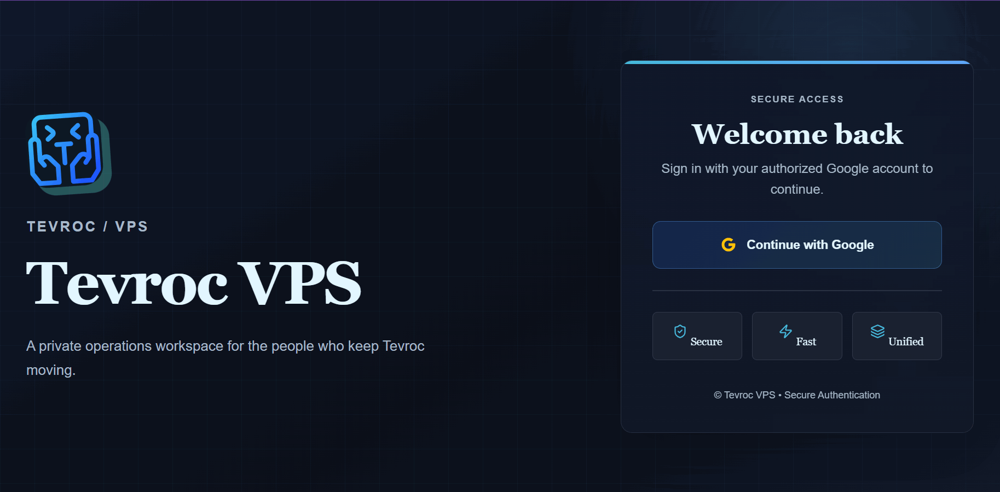
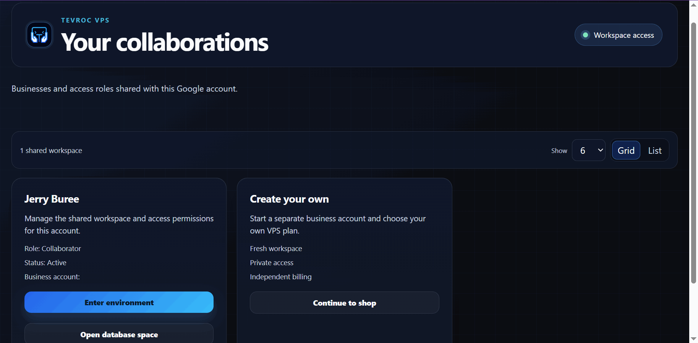
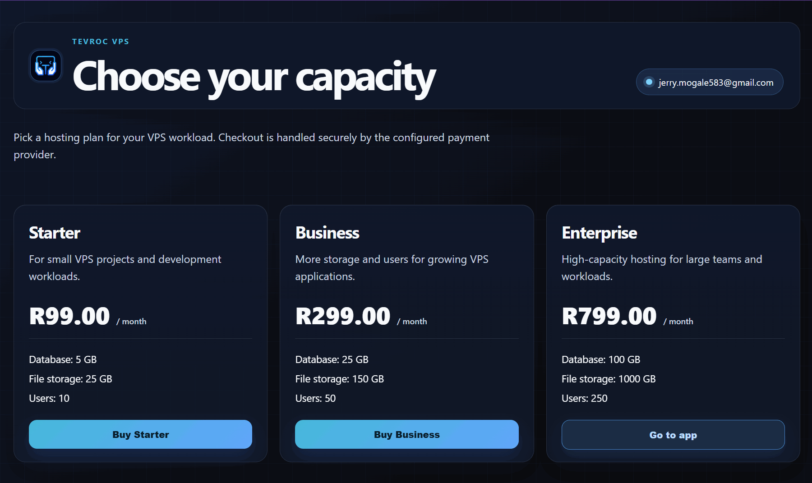
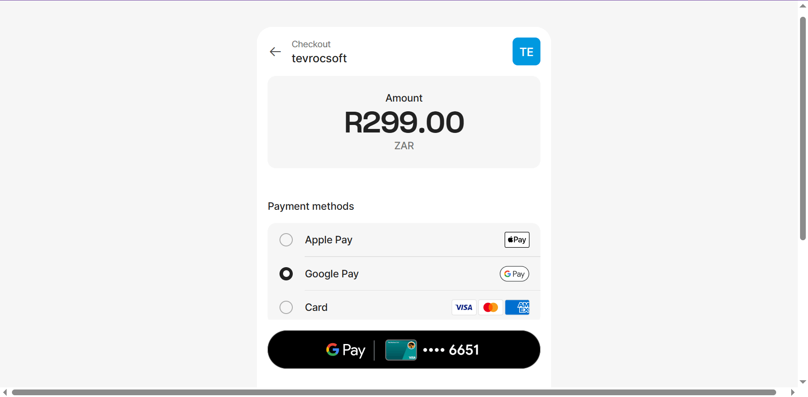
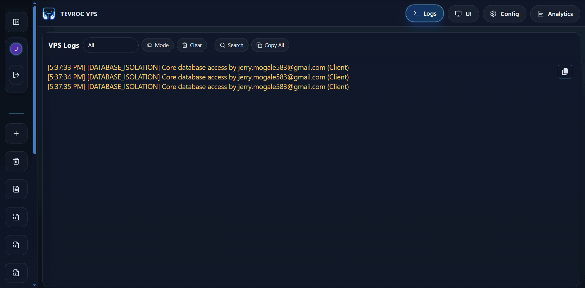
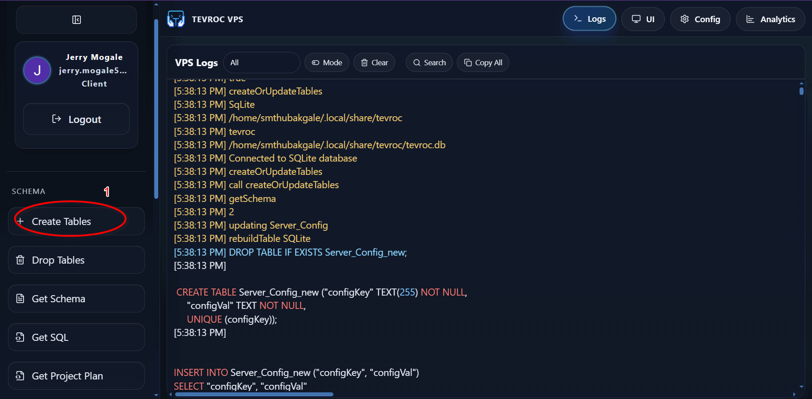
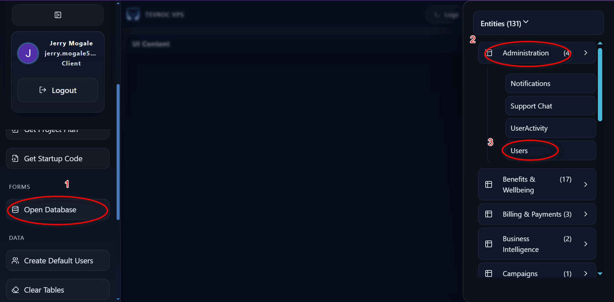

Relational first
Tables, relationships, constraints, and predictable queries make connected business data easier to model and evolve.
Tevroc VPS brings hosted relational data, shared workspaces, schema tools, logs, payments, and offline desktop development into one practical platform for app teams.
Many app teams do not need another generic infrastructure story. They need to see who can access the workspace, how data is structured, what capacity costs, where activity is logged, and how the database connects to the product they are building.
Tevroc VPS keeps users, permissions, orders, billing, support, activity, and business intelligence connected through relational entities instead of forcing every workflow into disconnected records.
Tables, relationships, constraints, and predictable queries make connected business data easier to model and evolve.
Collaborators, roles, active status, and business access bring the team into one controlled data environment.
Compare Starter, Business, and Enterprise plans before provisioning the database and storage your product needs.
Create tables, inspect schemas, get SQL, and keep data design close to the application workflows it supports.
Database isolation and activity signals make the hosted environment more understandable while you build and troubleshoot.
Use shared web access or free Windows, macOS, and Linux desktop workflows for local offline development.
Each screenshot below highlights one part of the VPS journey, from authentication and collaboration to capacity, checkout, logs, schema, and entity browsing.

The Google sign-in screen is the gateway to private database work. Authentication comes before workspace access, collaborator permissions, plans, and project operations.

The collaboration view exposes businesses, roles, active status, and entry points for shared and private workspaces so the database does not become an isolated personal tool.

Starter, Business, and Enterprise cards make database size, file storage, user limits, and monthly ZAR pricing easier to compare as an application grows.

The payment view shows a selected VPS amount and supported Apple Pay, Google Pay, and card methods as part of the provisioning flow.

VPS Logs surface database isolation and operational events, giving developers a useful trail when they are checking behavior or diagnosing a workflow.

Create Tables, Drop Tables, Get Schema, Get SQL, project planning, and startup-code actions turn database structure into an active part of application development.

Grouped domains such as Administration, Notifications, Support Chat, UserActivity, Users, Billing, and Business Intelligence show the practical shape of a relational application backend.
Use the web version for shared access, or choose the free offline desktop workflow when you are developing locally.